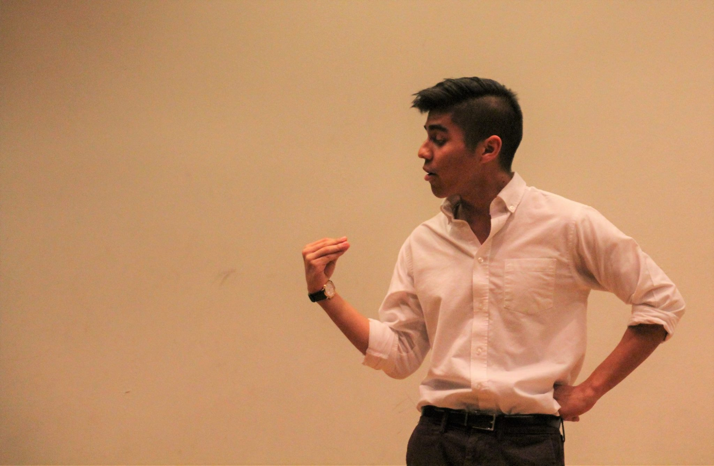

"As soon as you have made a thought, laugh at it." — Lao Tsu
Comedy has always had a special place in my heart. Making a group of people laugh gives me the purest form of joy. Through stand-up, sketch, and improv is where my creativity reaches its most natural form.